Genomic Exploration of TBP Producing Bacteria
Project Details
This project delves into the genomic makeup of three bacteria that produce tetrabromopyrrole (TBP), a molecule that is linked in aiding coral settlement. In this project we aim to assemble the genome, classify the bacteria, and finally annotate their respective genome to facilitate further study using these bacteria and/or similar bacteria.
Project Breakdown
The project can be broken up into the following sections
- Read Quality Control
- Assembly Generation
- Alignment, Polishing, and Circularization
- Assembly Quality Assessment
- Taxonomic Classification
- Genome Annotation
Read Quality Control
Jordan Ruiz Toquica extracted the DNA of bacterial strains CCAH7, CCAH11, CCAH3 provided by Kimberly Ritchie. The Bacterial DNA was then prepped for a Nanopore sequencing where each strain recieved a barcode assignment. CCAH7 as barcode01, CCAH11 as barcode02, CCAH3 as barcode03. Finally the DNA was sequenced by Jordan Ruiz Toquica using the MINion in the Medina Lab at Pennsylvania State University.
Basecalling
Once the MINion generated reads in the .fastq format through the use of their basecalling model guppy we ran FastQC to generate a report to asses the quality of the reads.
What we found was that the guppy model generated poor quality reads that would not be viable downstream. Due to this we took the original .pod5 files generated by the MINion and re-did the basecalling using dorado.
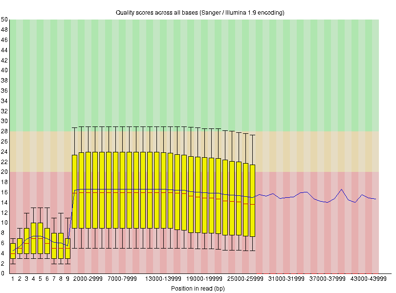 | 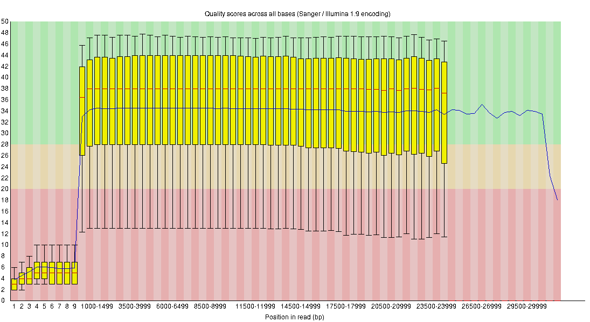
This view shows an overview of the range of quality values across all bases at each position in the fastq reads file. On the left we have the Guppy basecalled reads then on the right we have the Dorado basecalled reads.
#!/bin/bash
#SBATCH --job-name=BC01
#SBATCH --nodes=1
#SBATCH --ntasks-per-node=24
#SBATCH --time=24:00:00
#SBATCH --mem=250G
date
#Variables
export MODEL=dna_r10.4.1_e8.2_400bps_sup@v4.2.0
export INDIR=path/to/XXXXX_pass_barcode01.pod5
export OUT=barcode01.fastq.gz
#Commands
dorado duplex -t $SLURM_NTASKS -x "cpu" --emit-fastq $MODEL $INDIR | gzip > $OUT
datefastqc barcode01.fastq.gz
Trimming
After analyzing the quality graphs produced by FastQC it was clear that the beginning of the reads generated by Dorado were still of low quality. Due to this we decided to use chopper to trim our reads and found a trim of 100bp to be the best for conserving the reads while removing the low quality bit.
| 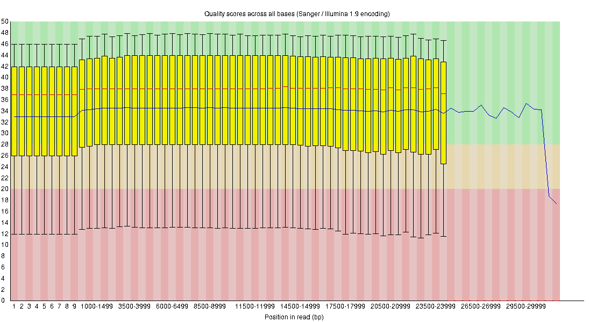
This view shows an overview of the range of quality values across all bases at each position in the fastq reads file. On the left we have the before-trim reads then on the right we have the 100bp-trim reads.
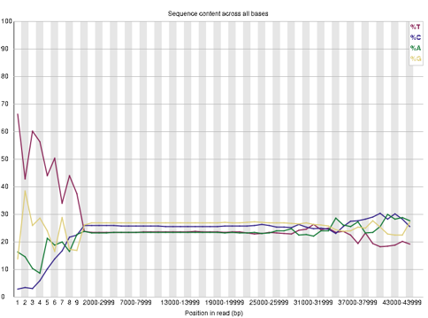 | 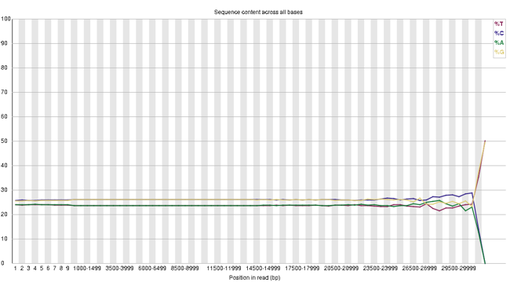
This view shows the per base sequence content across all reads at each position in the fastq reads file. On the left we have the before-trim reads then on the right we have the 100bp-trim reads.
| BC01 | BC02 | BC03 | |
|---|---|---|---|
| Total Sequences | 564,295 | 432,709 | 74,466 |
| Total Bases (Gbp) | 3.4 | 2.7 | 0.42 |
| Sequence Length | 1-31781 | 1-39369 | 5-38990 |
#!/bin/bash
#SBATCH --job-name=trim_B1
#SBATCH --nodes=1
#SBATCH --ntasks-per-node=6
#SBATCH --time=10:00:00
#SBATCH --mem=50G
date
#Variables
export BASE_TRIMMER=path/to/chopper
export TRIM_LENGTH=100
export CONTAMINATE_SEQUENCES=path/to/nanopore_adapters.fasta
export INDIR=path/to/barcode01.fastq.gz
export OUTDIR=barcode01_trimmed100.fastq.gz
#Commands
gunzip -c $INDIR | $BASE_TRIMMER --headcrop $TRIM_LENGTH --tailcrop $TRIM_LENGTH --contam $CONTAMINATE_SEQUENCES | gzip > $OUTDIR
date
fastqc barcode01_trimmed100.fastq.gz
Assembly Workflow
K-mer Assembly
Before we begin putting together an assembly we first had to get an approximate genome length to this we used jellyfish for a K-mer analysis using 25-mers.
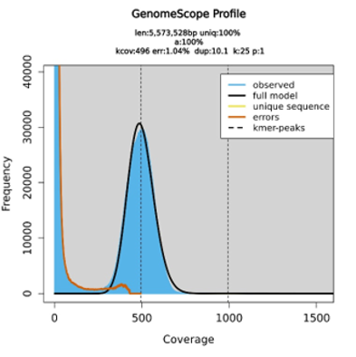
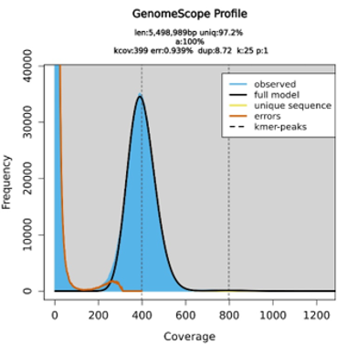
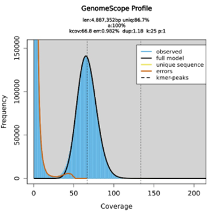
jellyfish count -t 10 -C -m 25 -s 1G barcode01_trimmed100.fastq -o 25mer_out.jf
jellyfish histo -h 1000000 -t 10 25mer_out.jf > barcode01.histo
I ran these lines within a slurm allocation instead of a script due to unique errors when I attempted to submit a slurm job script with these commands
Assembly
Once we came up with approximate genome sizes using jellyfish we decided to use flye as our assembler.
| Contig | length | COV |
|---|---|---|
| Contig_1 | 4,903,516 | 636 |
| Contig_4 | 521,089 | 626 |
| Contig_3 | 467,542 | 628 |
| Contig_2 | 6,778 | 546 |
Flye assembly info pertaining to barcode01 retrieved from assembly_info.txt file generated during assembly
| Contig | length | COV |
|---|---|---|
| Contig_1 | 3,527,231 | 499 |
| Contig_4 | 1,216,057 | 510 |
| Contig_2 | 928,174 | 492 |
| Contig_5 | 20,286 | 594 |
Flye assembly info pertaining to barcode02 retrieved from assembly_info.txt file generated during assembly
| Contig | length | COV |
|---|---|---|
| Contig_2 | 3,160,323 | 82 |
| Contig_3 | 1,214,135 | 91 |
| Contig_5 | 42,348 | 1150 |
Flye assembly info pertaining to barcode03 retrieved from assembly_info.txt file generated during assembly
#!/bin/bash
#SBATCH --job-name=flye_0X
#SBATCH --nodes=1
#SBATCH --ntasks-per-node=12
#SBATCH --time=20:00:00
#SBATCH --mem=50G
date
#Variables
export PFX=BC01
export GS=5.778m
export READS=/path/to/barcode01_trimmed100.fastq.gz
#Commands
/path/to/flye --nano-raw $READS --genome-size $GS --asm-coverage 200 -t 12 --out-dir /path/to/outdirAlignment and Polishing
Once assemblies were generated we decided to align and polish the assemblies using minimap2 and racon respectfully. We then used bbmap’s stats.sh feature to generate basic assembly information to investigate the effect of minimap2 and racon on our assembly during each alignment and polishing round.
The procedure went as follows: First Alignment → First Polish → Second Alignment … → Third Polish
| BCOX_A&P# | BC01 | BC01 (1) | BC01 (2) | BC01 (3) |
|---|---|---|---|---|
| GC | 0.5242 | 0.5242 | 0.5242 | 0.5242 |
| GC_stdev | 0.0038 | 0.003 | 0.0021 | 0.0026 |
| Contig Total | 4 | 4 | 4 | 4 |
| Total N/L50 (MB) | 1/4.904 | 1/4.903 | 1/4.903 | 1/4.903 |
| Max Contig Length (MB) | 4.904 | 4.903 | 4.903 | 4.903 |
| Number of Contig > 50 KB | 3 | 3 | 3 | 3 |
| % main genome in contigs > 50 KB | 99.89 | 99.89 | 99.9 | 99.91 |
| Total Sequence Length | 5,898,925 | 5,898,127 | 5,897,552 | 5,896,968 |
Table of assembly statistics generated by stats.sh from bbmap pertaining to the first barcode. It is important to note that this pattern was consistent with all barcodes.
#!/bin/bash
#SBATCH --job-name=BC01_minimap3
#SBATCH --nodes=1
#SBATCH --ntasks=12
#SBATCH --time=20:00:00
#SBATCH --mem=50G
date
#Variables
export ASSEMBLY=/path/to/assembly.fasta
export PFX=BC01
export READS=/path/to/barcode01_trimmed100.fastq.gz
#Commands
/path/to/minimap2 -t $SLURM_NTASKS $ASSEMBLY $READS > ${PFX}.paf#!/bin/bash
#SBATCH --job-name=BC01_racon
#SBATCH --nodes=1
#SBATCH --ntasks=4
#SBATCH --time=20:00:00
#SBATCH --mem=24G
date
#Variables
export PFX=BC01
export ASSEMBLY=/path/to/assembly.fasta
export PAF=BC01.paf
export READS=/path/to/barcode01_trimmed100.fastq.gz
export OUT=${PFX}_racon1.fasta
#Commands
racon -t $SLURM_NTASKS $READS $PAF $ASSEMBLY > $OUT#!/bin/bash
#SBATCH --job-name=BC01_minimap
#SBATCH --nodes=1
#SBATCH --ntasks=12
#SBATCH --time=20:00:00
#SBATCH --mem=50G
date
#Variables
export ASSEMBLY=./BC01_racon1.fasta
export PFX=BC01_R1
export READS=/path/to/barcode01_trimmed100.fastq.gz
#Commands
/path/to/minimap2 -t $SLURM_NTASKS $ASSEMBLY $READS > ${PFX}.paf#!/bin/bash
#SBATCH --job-name=BC01_racon
#SBATCH --nodes=1
#SBATCH --ntasks=8
#SBATCH --time=20:00:00
#SBATCH --mem=50G
date
#Variables
export PFX=BC01
export ASSEMBLY=BC01_racon1.fasta
export PAF=BC01_R1.paf
export READS=/path/to/barcode01_trimmed100.fastq.gz
export OUT=BC01_racon2.fasta
#Commands
racon -t $SLURM_NTASKS $READS $PAF $ASSEMBLY > $OUT#!/bin/bash
#SBATCH --job-name=BC01_minimap
#SBATCH --nodes=1
#SBATCH --ntasks=12
#SBATCH --time=20:00:00
#SBATCH --mem=50G
date
#Variables
export ASSEMBLY=./BC01_racon2.fasta
export PFX=BC01_R2
export READS=/path/to/barcode01_trimmed100.fastq.gz
#Commands
/path/to/minimap2 -t $SLURM_NTASKS $ASSEMBLY $READS > ${PFX}.paf#!/bin/bash
#SBATCH --job-name=BC01_racon
#SBATCH --nodes=1
#SBATCH --ntasks=8
#SBATCH --time=20:00:00
#SBATCH --mem=50G
date
#Variables
export PFX=BC01
export ASSEMBLY=BC01_racon2.fasta
export PAF=BC01_R2.paf
export READS=/path/to/barcode01_trimmed100.fastq.gz
export OUT=BC01_racon3.fasta
#Commands
racon -t $SLURM_NTASKS $READS $PAF $ASSEMBLY > $OUTCircularization
Once we aligned and polished the assemblies we decided to circularize both the non-polished and polished assemblies using canu to compare it to flye’s circularization algorithm while simultaneously being able to circularize the polished assemblies which were not circularized by racon.
KEY:
- Y = Circularized
- N = Not Circularized
- X = Contig DNE
- * = Main Chromosome
- - = No Data
| Contig | BC01_0P_0C | BC01_1P_0C | BC01_0P_1C | BC01_1P_1C |
|---|---|---|---|---|
| Contig_1 | Y* | - | Y* | Y* |
| Contig_2 | Y | - | N | N |
| Contig_3 | Y | - | Y | Y |
| Contig_4 | Y | - | Y | Y |
| Contig_5 | X | - | X | X |
| Contig | BC02_0P_0C | BC02_1P_0C | BC02_0P_1C | BC02_1P_1C |
|---|---|---|---|---|
| Contig_1 | N* | - | N* | N* |
| Contig_2 | N | - | N | N |
| Contig_3 | X | - | X | X |
| Contig_4 | Y | - | Y | Y |
| Contig_5 | N | - | N | N |
| Contig | BC03_0P_0C | BC03_1P_0C | BC03_0P_1C | BC03_1P_1C |
|---|---|---|---|---|
| Contig_1 | X | - | X | X |
| Contig_2 | N* | - | N* | N* |
| Contig_3 | N | - | N | N |
| Contig_4 | X | - | X | X |
| Contig_5 | Y | - | N | N |
#!/bin/bash
#SBATCH --job-name=circle_01
#SBATCH --nodes=1
#SBATCH --ntasks=18
#SBATCH --time=20:00:00
#SBATCH --mem=100G
#Circlator Dependencies
export PATH=$PATH:/path/to/canu-1.7.1/Linux-amd64/bin
export PATH=$PATH:/path/to/programs
export PATH=$PATH:/path/to/bwa
module load samtools
#Variables
export ASSEMBLY=/path/to/barcode01/assembly.fasta
export READS=/path/to/barcode01/barcode01_trimmed100.fastq
export OUTPUT=/path/to/circulization/BC1_INITIAL
#Command
circlator all --assembler canu --threads $SLURM_NTASKS $ASSEMBLY $READS $OUTPUT
Assembly Quality Assessment
To generate all data to assess our assemblies we used the following tools for the following reasons:
- Minimap2: Generation of a .sam alignment file for downstream analysis such as blobtools
- Samtools: Conversion, Sorting, and Indexing of the .sam alignment file into a binary .bam file accepted by genomic tools
- Blastn: Allows us to make loose taxonomic assignments of the bacteria and their plasmids, also generates a file needed for blobtools
- Blobtools: Allows us to visualize each contig separately allowing us to check for contamination and possible plasmids
- BBmap: Through the use of BBmap’s stats.sh script we can generate several assembly stats for a quality assessment
- CheckM: Using CheckM we will generate several assembly stats that will allow us to make a quality assesment.
Blobtools Prep
All of the blobtools preparation was done in a slurm allocation of 50GB minus the Minimap2 alignment.
We will generate a .sam alignment file for downstream analysis such as blobtools
#!/bin/bash
#SBATCH --job-name=BC01_minimappin
#SBATCH --nodes=1
#SBATCH --ntasks=12
#SBATCH --time=20:00:00
#SBATCH --mem=50G
date
#Variables
export ASSEMBLY=/path/to/assembly.fasta
export PFX=BC01_BLOB
export READS=/path/to/barcode01/barcode01_trimmed100.fastq
#Commands
/path/to/minimap2 -a -t $SLURM_NTASKS $ASSEMBLY $READS > ${PFX}.sam
We will be Converting, Sorting, and Indexing the .sam alignment file into a binary .bam file accepted by genomic tools using Samtools
samtools view -b BC01_BLOB.sam > BC01_BLOB.bam
samtools sort -o Sorted_BC01_BLOB.bam BC01_BLOB.bam
samtools index Sorted_BC01_BLOB.bam
We will be generating blastn .tsv files for blobtools to use and we will discuss the result of the whole genome blast in the taxonomic classification section. We will be using the nt database downloaded via this command: update_blastdb.pl -d nt, which downloaded the nt database on 1/24/24
#!/bin/bash
#SBATCH --job-name=BC01_blast
#SBATCH --nodes=1
#SBATCH --ntasks=18
#SBATCH --time=20:00:00
#SBATCH --mem=100G
#Variables
export QUERY = /path/to/minimap2/06.fixstart.fasta
export DATABASE = /path/to/minimap2/database/nt
export OUT_FORMAT = '6 qseqid staxids bitscore std'
export MAX_TARGET = 10
export MAX_HSPS = 1
export EVAL = 1e-25
export OUTPUT = .tsv
#Command
blastn -query $QUERY -db $DATABASE -outfmt $OUT_FORMAT -max_target_seqs $MAX_TARGET -max_hsps $MAX_HSPS -evalue $EVAL -out $OUTPUT
Blobtools
In this section we used blobtools to assess whether or not we had contamination/if our contigs may pertain to plasmids. Blob tools node and names data was downloaded via following the github’s instruction on 12/27/23
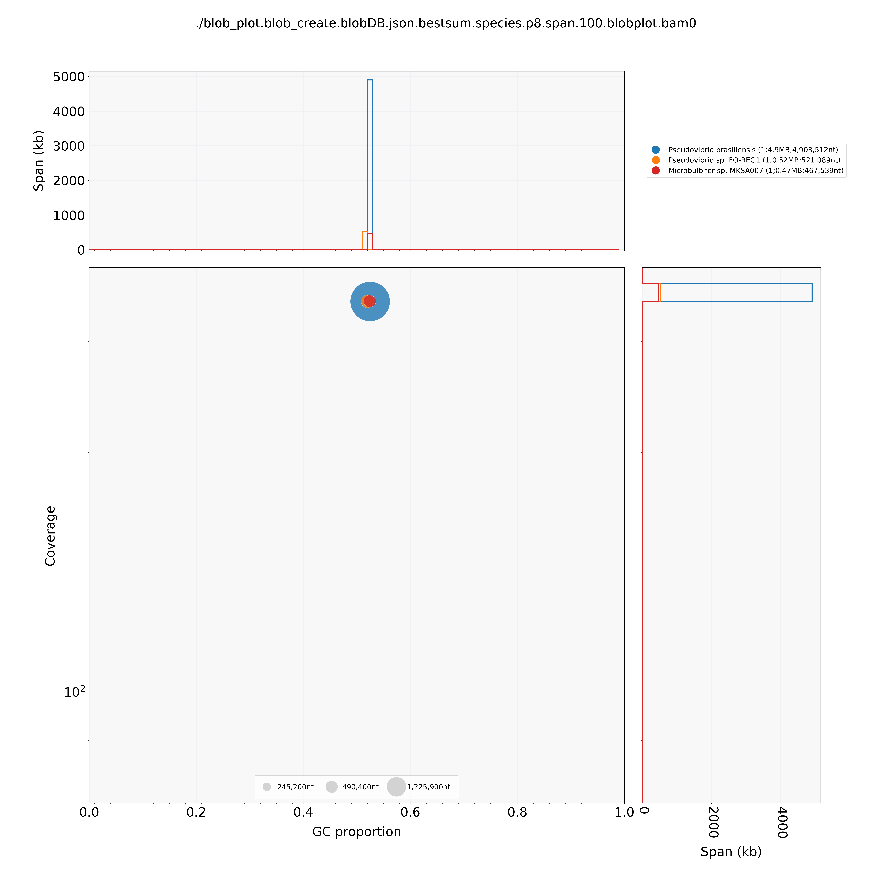
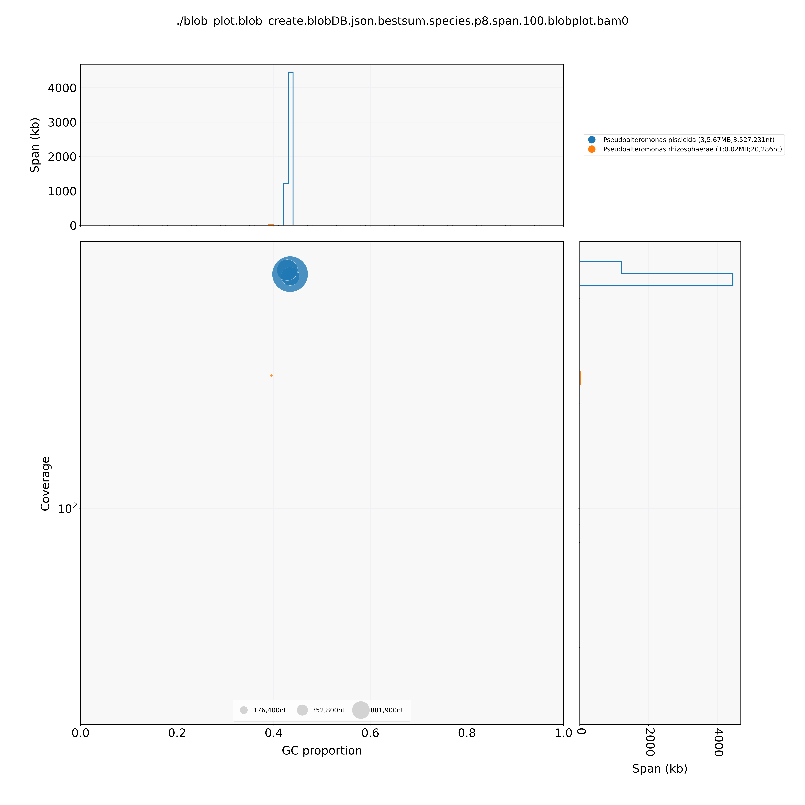
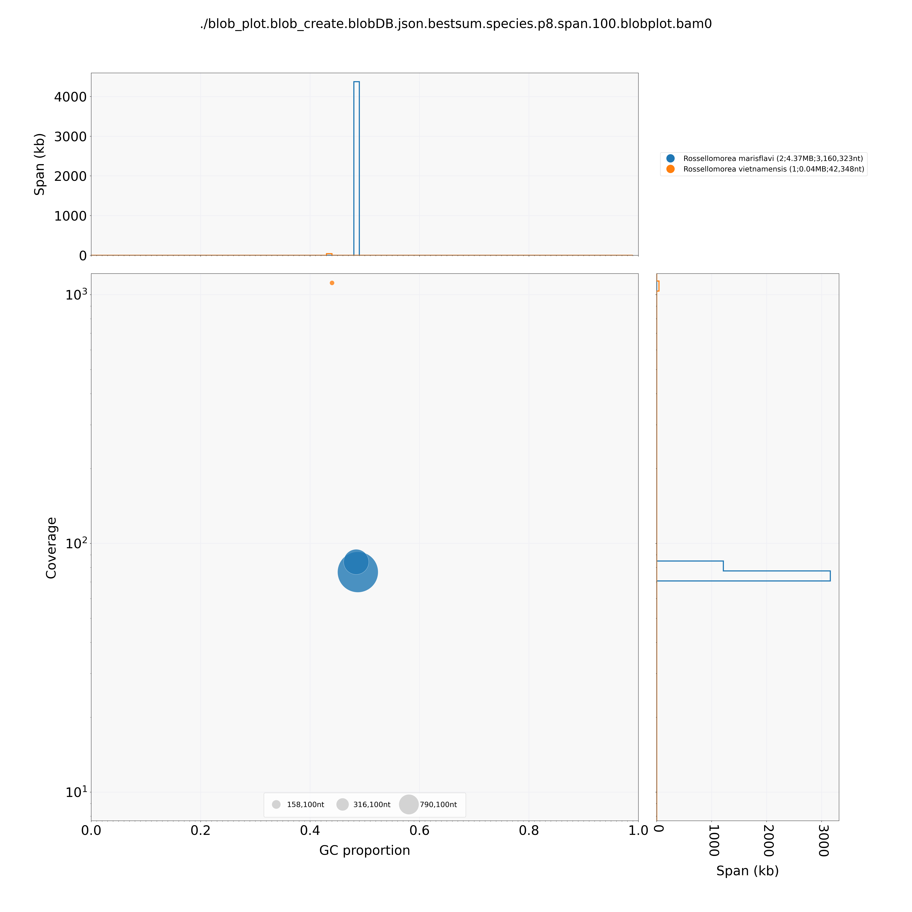
blobtools create -i /PATH/TO/assembly.fasta -b /PATH/TO/alignment.bam -t /PATH/TO/blast.tsv -o ./blob_create --names /PATH/TO/blob_data/names.dmp --nodes /PATH/TO/blob_data/nodes.dmp
blobtools view -i ./blob_create.blobDB.json -r 'species' -o ./view_species
blobtools plot -i ./blob_create.blobDB.json -r 'species' -o ./blob_plot_species
blobtools view -i ./blob_create.blobDB.json -r 'genus' -o ./view_genus
blobtools plot -i ./blob_create.blobDB.json -r 'genus' -o ./blob_plot_genus
Discussion
After assessing each plot it seems as if our samples were not contaminated phew and that the different colored blobs belonged to plasmids. We reached this conclusion due the large blobs all pertaining to one taxon while the small blobs pertained to others. This will be further investigated by blasting the contigs separately in a future section.
CheckM
Using CheckM we generated several assembly stats that will allow us to make a quality assesment. This was done using a slurm job allocation of 50GB and CheckM’s database downloaded on 12/28/2023 from here: https://data.ace.uq.edu.au/
The following pipeline was ran within a directory containing the .fasta assembly file in a bins sub-directory
checkm lineage_wf -t 8 -x fasta ./bins ./output
checkm tetra -t 8 ./bins/assembly.fasta tetra.tsv
checkm coding_plot -x fasta ./output ./bins ./plot 9
checkm tetra_plot -x fasta ./output ./bins ./tetraplot tetra.tsv 95
checkm gc_plot -x fasta ./bins ./gc_plots 95
Assembly Assesment
The following assembly statistics were generated via their respective tools
- Completeness (%): CheckM
- Contamination (%): CheckM
- Chromosome Coverage: TBD
- Genome size (Mb): BBmap
- Contigs (no.): BBmap
- N50 (bp): BBmap
- Gaps (%): TBD
- GC content: CheckM
- Circularized: Circlator/Flye
- Coding Density (%): CheckM
- Tetra nucleotides: CheckM
| BC01_0P_0C | BC01_1P_0C | BC01_0P_1C | BC01_1P_1C | |
|---|---|---|---|---|
| Strain | CCAH7 | CCAH7 | CCAH7 | CCAH7 |
| Completeness (%) | 100.00 | 98.97 | 100.00 | 98.97 |
| Contamination (%) | 0.00 | 0.00 | 0.00 | 0.00 |
| Chromosome coverage | 636 | |||
| Genome size (Mb) | 5,898,925 | 5,896,968 | 5,892,140 | 5,897,021 |
| Contigs (no.) | 4 | 4 | 3 | 3 |
| N50 (bp) | 4,904,000 | 4,903,000 | 4,904,000 | 4,903,000 |
| Gaps (%) | 0 | 0 | 0 | 0 |
| GC content | 0.5242 | 0.5242 | 0.5242 | 0.5242 |
| Circularized (*) | 4* | 3* | 3* | |
| Coding Density (%) | 86.80 | 86.40 | 86.80 | 86.40 |
| Tetra nucleotides | 0.08 | 0.09 | 0.02 | 0.09 |
| BC02_0P_0C | BC02_1P_0C | BC02_0P_1C | BC02_1P_1C | |
|---|---|---|---|---|
| Strain | CCAH11 | CCAH11 | CCAH11 | CCAH11 |
| Completeness (%) | 100.00 | 99.35 | 100.00 | 99.35 |
| Contamination (%) | 1.60 | 1.30 | 1.60 | 1.30 |
| Chromosome coverage | 499 | |||
| Genome size (Mb) | 5,691,748 | 5,688,479 | 5,691,751 | 5,688,508 |
| Contigs (no.) | 4 | 4 | 4 | 4 |
| N50 (bp) | 3,527,000 | 3,526,000 | 3,527,000 | 3,526,000 |
| Gaps (%) | ||||
| GC content | 0.4325 | 0.4325 | 0.4325 | 0.4325 |
| Circularized (*) | 1 | 1 | 1 | |
| Coding Density (%) | 88.10 | 87.90 | 88.10 | 87.90 |
| Tetra nucleotides | 0 | 0.05 | 0.05 | 0.05 |
| BC03_0P_0C | BC03_1P_0C | BC03_0P_1C | BC03_1P_1C | |
|---|---|---|---|---|
| Strain | CCAH3 | CCAH3 | CCAH3 | CCAH3 |
| Completeness (%) | 98.68 | 98.68 | 98.68 | 98.68 |
| Contamination (%) | 1.10 | 1.10 | 1.10 | 1.10 |
| Chromosome coverage | 82 | |||
| Genome size (Mb) | 4,416,806 | 4,416,701 | 4,416,806 | 4,416,701 |
| Contigs (no.) | 3 | 3 | 3 | 3 |
| N50 (bp) | 3,160,000 | 3,160,000 | 3,160,000 | 3,160,000 |
| Gaps (%) | ||||
| GC content | 0.4861 | 0.4861 | 0.4861 | 0.4861 |
| Circularized (*) | 1 | 0 | 0 | |
| Coding Density (%) | 86.30 | 86.30 | 86.30 | 86.30 |
| Tetra nucleotides | 0 | 0.08 | 0.08 | 0.08 |
Discussion
After assessing all data generated and through discussion with colleagues I decided to continue working with the un-polished circularized assemblies. It seems as the polishing and alignment did not effect the quality in a significant manner while circlator seems to have un-circularized some contigs that may actually not be circular.
Table of Final Assemblies
| BC01 | BC02 | BC03 | |
|---|---|---|---|
| Strain | CCAH7 | CCAH11 | CCAH3 |
| Completeness (%) | 100.00 | 100.00 | 98.68 |
| Contamination (%) | 0.00 | 1.60 | 1.10 |
| Chromosome coverage | |||
| Genome size (Mb) | 5,892,140 | 5,691,751 | 4,416,806 |
| Contigs (no.) | 3 | 4 | 3 |
| N50 (bp) | 4,904,000 | 3,527,000 | 3,160,000 |
| Gaps (%) | 0 | ||
| GC content | 0.5242 | 0.4325 | 0.4861 |
| Circularized (*) | 3* | 1 | 0 |
| Coding Density (%) | 86.80 | 88.10 | 86.30 |
| Tetra nucleotides | 0.02 | 0.05 | 0.08 |
Taxonomic Classification
In this section we will use GTDB-Tk for a bacterial classification while using NCBI’s blast website to investigate our non chromosome contigs.
First GTDB-Tk’s classify_wf command was run using the GTDB-Tk bacterial database release207_v2 downloaded on 2/15/2024
#!/bin/bash
#SBATCH --job-name=BC01_GTDBTK
#SBATCH --nodes=1
#SBATCH --ntasks=18
#SBATCH --time=20:00:00
#SBATCH --mem=100G
#Variables
export ASSEMBLY=/path/to/BC1_BIN
export OUT=/path/to/BC1
#Commands
gtdbtk classify_wf --genome_dir $ASSEMBLY -x fasta --cpus 16 --out_dir $OUT
Classify Results
BC01
classified as Pseudovibrio denitrificans the closest reference genome usde for comparison was GCF_001310815.1 with an ANI of 95.29% and a MSA percent of 98.29%
BC02
classified as Pseudoalteromonas elyakovii the closest reference genome usde for comparison was GCA_000814665.1 with an ANI of 97.29% and a MSA percent of 97.78%
BC03
classified as Rossellomorea marisflavi_A the closest reference genome usde for comparison was GCF_009806575.1 with an ANI of 98.92% and a MSA percent of 91.84%
Classify Discussion
When interpreting our results we are looking for two separate values being the Average Nucleotide Identity (ANI) and Multiple Sequence Alignment (MSA). ANI measures the overall similarity between two DNA sequences giving us a percentage of how many nts line up while MSA indicates a high level of alignment between our assembly and the reference genome. Since all of our ANI’s are over 95% we can conclude that the taxonomic assignment is correct, while the MSA supports that GTDB-Tk was able to align and make conclusions properly.
Blasting Individual Contigs
DISCUSS WITH RAUL - Not Finished
The aim of this section was to blast all of the non-chromosome sections and evaluate whether or not our contigs were plasmids or DNA pertaining to other Bacteria.
BC01
When blasting the contigs pertaining to BC01 we found the following accession numbers for contig three and four: CP128431.1 and CP074127.1 respectively
BC02
When blasting the contigs pertaining to BC02 we found the following accession numbers for contig two, four, and five:
BC03
When blasting the contigs pertaining to BC03 we found the following accession numbers for contig